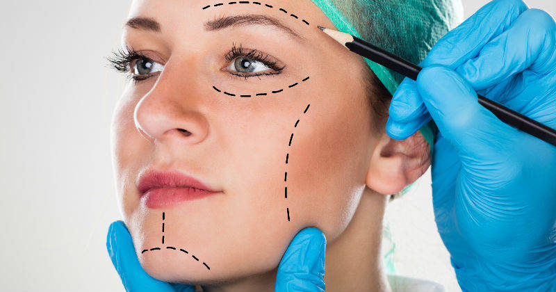
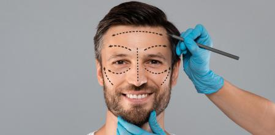

En Colombia, este mercado inicia a principios de los años 90, con los siguientes referentes históricos:
El ingreso de líneas cosméticas Europeas: Sans Soucis, Germaine de Capouccini, Matis, Pevonia, Maystar, entre otras.
El registro de programas de escuelas de estética ante las Secretarias de educación, se desarrolló inicialmente en Cali y Bogotá, con escuelas como IESTHETIC CEM (Cali), BIOTRONIC y L´ESTHÉTIQUE en Bogotá. L´Esthétique contó con Aprobación estatal en 1997 (Resolución 8660 de Dic.de 1997). En 2000 inicia la expansión de escuelas de estética a otras ciudades, ejemplo de ello es Lesthétique que en 2003, abrió sus puertas en Armenia y Bucaramanga y en 2013 en Chía.
El nacimiento de empresas fabricantes de Aparatología Nacionales como DERMOCELL, FORMAX 8 y EVIDENCE, las cuales son una muestra del desarrollo de este sector ante el mundo y complementan la oferta de Aparatología Importada como Sorisa, Ross, Ultratone, entre otros.

Estetica Facial Femenina
